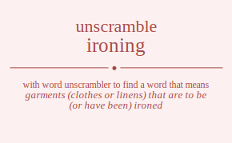

The word found after unscrambling ironing means that garments (clothes or linens) that are to be (or have been) ironed, the work of using heat to smooth washed clothes in order to remove any wrinkles, press and smooth with a heated iron, .

The word found after unscrambling ironing means that garments (clothes or linens) that are to be (or have been) ironed, the work of using heat to smooth washed clothes in order to remove any wrinkles, press and smooth with a heated iron, .
You can also find solutions for different combinations of letters in ironing like ironing ironign ironnig ironngi irongin irongni iroinng iroingn iroinng iroingn iroignn iroignn ironnig ironngi ironing ironign irongni irongin irognin irognni iroginn iroginn irognni irognin irnoing irnoign irnonig irnongi irnogin irnogni irniong irniogn irninog irningo irnigon irnigno irnnoig irnnogi irnniog irnnigo irnngoi irnngio irngoin irngoni irngion irngino irngnoi irngnio irionng iriongn irionng iriongn iriognn iriognn irinong irinogn irinnog irinngo iringon iringno irinong irinogn irinnog irinngo iringon iringno irigonn irigonn irignon irignno irignon irignno irnonig irnongi irnoing irnoign irnogni irnogin irnnoig irnnogi irnniog irnnigo irnngoi irnngio irniong irniogn irninog irningo irnigon irnigno irngoni irngoin irngnoi irngnio irngion irngino irgonin irgonni irgoinn irgoinn irgonni irgonin irgnoin irgnoni irgnion irgnino irgnnoi irgnnio irgionn irgionn irginon irginno irginon irginno irgnoni irgnoin irgnnoi irgnnio irgnion irgnino iorning iornign iornnig iornngi iorngin iorngni iorinng ioringn iorinng ioringn iorignn iorignn iornnig iornngi iorning iornign iorngni iorngin iorgnin iorgnni iorginn iorginn iorgnni iorgnin ionring ionrign ionrnig ionrngi ionrgin ionrgni ionirng ionirgn ioninrg ioningr ionigrn ionignr ionnrig ionnrgi ionnirg ionnigr ionngri ionngir iongrin iongrni iongirn ionginr iongnri iongnir ioirnng ioirngn ioirnng ioirngn ioirgnn ioirgnn ioinrng ioinrgn ioinnrg ioinngr ioingrn ioingnr ioinrng ioinrgn ioinnrg ioinngr ioingrn ioingnr ioigrnn ioigrnn ioignrn ioignnr ioignrn ioignnr ionrnig ionrngi ionring ionrign ionrgni ionrgin ionnrig ionnrgi ionnirg ionnigr ionngri ionngir ionirng ionirgn ioninrg ioningr ionigrn ionignr iongrni iongrin iongnri iongnir iongirn ionginr iogrnin iogrnni iogrinn iogrinn iogrnni iogrnin iognrin iognrni iognirn iogninr iognnri iognnir iogirnn iogirnn ioginrn ioginnr ioginrn ioginnr iognrni iognrin iognnri iognnir iognirn iogninr inroing inroign inronig inrongi inrogin inrogni inriong inriogn inrinog inringo inrigon inrigno inrnoig inrnogi inrniog inrnigo inrngoi inrngio inrgoin inrgoni inrgion inrgino inrgnoi inrgnio inoring inorign inornig inorngi inorgin inorgni inoirng inoirgn inoinrg inoingr inoigrn inoignr inonrig inonrgi inonirg inonigr inongri inongir inogrin inogrni inogirn inoginr inognri inognir inirong inirogn inirnog inirngo inirgon inirgno iniorng iniorgn inionrg iniongr iniogrn iniognr ininrog ininrgo ininorg ininogr iningro iningor inigron inigrno inigorn inigonr inignro inignor innroig innrogi innriog innrigo innrgoi innrgio innorig innorgi innoirg innoigr innogri innogir innirog innirgo inniorg inniogr innigro innigor inngroi inngrio inngori inngoir inngiro inngior ingroin ingroni ingrion ingrino ingrnoi ingrnio ingorin ingorni ingoirn ingoinr ingonri ingonir ingiron ingirno ingiorn ingionr inginro inginor ingnroi ingnrio ingnori ingnoir ingniro ingnior iironng iirongn iironng iirongn iirognn iirognn iirnong iirnogn iirnnog iirnngo iirngon iirngno iirnong iirnogn iirnnog iirnngo iirngon iirngno iirgonn iirgonn iirgnon iirgnno iirgnon iirgnno iiornng iiorngn iiornng iiorngn iiorgnn iiorgnn iionrng iionrgn iionnrg iionngr iiongrn iiongnr iionrng iionrgn iionnrg iionngr iiongrn iiongnr iiogrnn iiogrnn iiognrn iiognnr iiognrn iiognnr iinrong iinrogn iinrnog iinrngo iinrgon iinrgno iinorng iinorgn iinonrg iinongr iinogrn iinognr iinnrog iinnrgo iinnorg iinnogr iinngro iinngor iingron iingrno iingorn iingonr iingnro iingnor iinrong iinrogn iinrnog iinrngo iinrgon iinrgno iinorng iinorgn iinonrg iinongr iinogrn iinognr iinnrog iinnrgo iinnorg iinnogr iinngro iinngor iingron iingrno iingorn iingonr iingnro iingnor iigronn iigronn iigrnon iigrnno iigrnon iigrnno iigornn iigornn iigonrn iigonnr iigonrn iigonnr iignron iignrno iignorn iignonr iignnro iignnor iignron iignrno iignorn iignonr iignnro iignnor inronig inrongi inroing inroign inrogni inrogin inrnoig inrnogi inrniog inrnigo inrngoi inrngio inriong inriogn inrinog inringo inrigon inrigno inrgoni inrgoin inrgnoi inrgnio inrgion inrgino inornig inorngi inoring inorign inorgni inorgin inonrig inonrgi inonirg inonigr inongri inongir inoirng inoirgn inoinrg inoingr inoigrn inoignr inogrni inogrin inognri inognir inogirn inoginr innroig innrogi innriog innrigo innrgoi innrgio innorig innorgi innoirg innoigr innogri innogir innirog innirgo inniorg inniogr innigro innigor inngroi inngrio inngori inngoir inngiro inngior inirong inirogn inirnog inirngo inirgon inirgno iniorng iniorgn inionrg iniongr iniogrn iniognr ininrog ininrgo ininorg ininogr iningro iningor inigron inigrno inigorn inigonr inignro inignor ingroni ingroin ingrnoi ingrnio ingrion ingrino ingorni ingorin ingonri ingonir ingoirn ingoinr ingnroi ingnrio ingnori ingnoir ingniro ingnior ingiron ingirno ingiorn ingionr inginro inginor igronin igronni igroinn igroinn igronni igronin igrnoin igrnoni igrnion igrnino igrnnoi igrnnio igrionn igrionn igrinon igrinno igrinon igrinno igrnoni igrnoin igrnnoi igrnnio igrnion igrnino igornin igornni igorinn igorinn igornni igornin igonrin igonrni igonirn igoninr igonnri igonnir igoirnn igoirnn igoinrn igoinnr igoinrn igoinnr igonrni igonrin igonnri igonnir igonirn igoninr ignroin ignroni ignrion ignrino ignrnoi ignrnio ignorin ignorni ignoirn ignoinr ignonri ignonir igniron ignirno igniorn ignionr igninro igninor ignnroi ignnrio ignnori ignnoir ignniro ignnior igironn igironn igirnon igirnno igirnon igirnno igiornn igiornn igionrn igionnr igionrn igionnr iginron iginrno iginorn iginonr iginnro iginnor iginron iginrno iginorn iginonr iginnro iginnor ignroni ignroin ignrnoi ignrnio ignrion ignrino ignorni ignorin ignonri ignonir ignoirn ignoinr ignnroi ignnrio ignnori ignnoir ignniro ignnior igniron ignirno igniorn ignionr igninro igninor rioning rionign rionnig rionngi riongin riongni rioinng rioingn rioinng rioingn rioignn rioignn rionnig rionngi rioning rionign riongni riongin riognin riognni rioginn rioginn riognni riognin rinoing rinoign rinonig rinongi rinogin rinogni riniong riniogn rininog riningo rinigon rinigno rinnoig rinnogi rinniog rinnigo rinngoi rinngio ringoin ringoni ringion ringino ringnoi ringnio riionng riiongn riionng riiongn riiognn riiognn riinong riinogn riinnog riinngo riingon riingno riinong riinogn riinnog riinngo riingon riingno riigonn riigonn riignon riignno riignon riignno rinonig rinongi rinoing rinoign rinogni rinogin rinnoig rinnogi rinniog rinnigo rinngoi rinngio riniong riniogn rininog riningo rinigon rinigno ringoni ringoin ringnoi ringnio ringion ringino rigonin rigonni rigoinn rigoinn rigonni rigonin rignoin rignoni rignion rignino rignnoi rignnio rigionn rigionn riginon riginno riginon riginno rignoni rignoin rignnoi rignnio rignion rignino roining roinign roinnig roinngi roingin roingni roiinng roiingn roiinng roiingn roiignn roiignn roinnig roinngi roining roinign roingni roingin roignin roignni roiginn roiginn roignni roignin roniing roniign roninig roningi ronigin ronigni roniing roniign roninig roningi ronigin ronigni ronniig ronnigi ronniig ronnigi ronngii ronngii rongiin rongini rongiin rongini rongnii rongnii roiinng roiingn roiinng roiingn roiignn roiignn roining roinign roinnig roinngi roingin roingni roining roinign roinnig roinngi roingin roingni roiginn roiginn roignin roignni roignin roignni roninig roningi roniing roniign ronigni ronigin ronniig ronnigi ronniig ronnigi ronngii ronngii roniing roniign roninig roningi ronigin ronigni rongini rongiin rongnii rongnii rongiin rongini roginin roginni rogiinn rogiinn roginni roginin rogniin rognini rogniin rognini rognnii rognnii rogiinn rogiinn roginin roginni roginin roginni rognini rogniin rognnii rognnii rogniin rognini rnioing rnioign rnionig rniongi rniogin rniogni rniiong rniiogn rniinog rniingo rniigon rniigno rninoig rninogi rniniog rninigo rningoi rningio rnigoin rnigoni rnigion rnigino rnignoi rnignio rnoiing rnoiign rnoinig rnoingi rnoigin rnoigni rnoiing rnoiign rnoinig rnoingi rnoigin rnoigni rnoniig rnonigi rnoniig rnonigi rnongii rnongii rnogiin rnogini rnogiin rnogini rnognii rnognii rniiong rniiogn rniinog rniingo rniigon rniigno rnioing rnioign rnionig rniongi rniogin rniogni rniniog rninigo rninoig rninogi rningio rningoi rnigion rnigino rnigoin rnigoni rnignio rnignoi rnnioig rnniogi rnniiog rnniigo rnnigoi rnnigio rnnoiig rnnoigi rnnoiig rnnoigi rnnogii rnnogii rnniiog rnniigo rnnioig rnniogi rnnigio rnnigoi rnngioi rnngiio rnngoii rnngoii rnngiio rnngioi rngioin rngioni rngiion rngiino rnginoi rnginio rngoiin rngoini rngoiin rngoini rngonii rngonii rngiion rngiino rngioin rngioni rnginio rnginoi rngnioi rngniio rngnoii rngnoii rngniio rngnioi riionng riiongn riionng riiongn riiognn riiognn riinong riinogn riinnog riinngo riingon riingno riinong riinogn riinnog riinngo riingon riingno riigonn riigonn riignon riignno riignon riignno rioinng rioingn rioinng rioingn rioignn rioignn rioning rionign rionnig rionngi riongin riongni rioning rionign rionnig rionngi riongin riongni rioginn rioginn riognin riognni riognin riognni riniong riniogn rininog riningo rinigon rinigno rinoing rinoign rinonig rinongi rinogin rinogni rinniog rinnigo rinnoig rinnogi rinngio rinngoi ringion ringino ringoin ringoni ringnio ringnoi riniong riniogn rininog riningo rinigon rinigno rinoing rinoign rinonig rinongi rinogin rinogni rinniog rinnigo rinnoig rinnogi rinngio rinngoi ringion ringino ringoin ringoni ringnio ringnoi rigionn rigionn riginon riginno riginon riginno rigoinn rigoinn rigonin rigonni rigonin rigonni rignion rignino rignoin rignoni rignnio rignnoi rignion rignino rignoin rignoni rignnio rignnoi rnionig rniongi rnioing rnioign rniogni rniogin rninoig rninogi rniniog rninigo rningoi rningio rniiong rniiogn rniinog rniingo rniigon rniigno rnigoni rnigoin rnignoi rnignio rnigion rnigino rnoinig rnoingi rnoiing rnoiign rnoigni rnoigin rnoniig rnonigi rnoniig rnonigi rnongii rnongii rnoiing rnoiign rnoinig rnoingi rnoigin rnoigni rnogini rnogiin rnognii rnognii rnogiin rnogini rnnioig rnniogi rnniiog rnniigo rnnigoi rnnigio rnnoiig rnnoigi rnnoiig rnnoigi rnnogii rnnogii rnniiog rnniigo rnnioig rnniogi rnnigio rnnigoi rnngioi rnngiio rnngoii rnngoii rnngiio rnngioi rniiong rniiogn rniinog rniingo rniigon rniigno rnioing rnioign rnionig rniongi rniogin rniogni rniniog rninigo rninoig rninogi rningio rningoi rnigion rnigino rnigoin rnigoni rnignio rnignoi rngioni rngioin rnginoi rnginio rngiion rngiino rngoini rngoiin rngonii rngonii rngoiin rngoini rngnioi rngniio rngnoii rngnoii rngniio rngnioi rngiion rngiino rngioin rngioni rnginio rnginoi rgionin rgionni rgioinn rgioinn rgionni rgionin rginoin rginoni rginion rginino rginnoi rginnio rgiionn rgiionn rgiinon rgiinno rgiinon rgiinno rginoni rginoin rginnoi rginnio rginion rginino rgoinin rgoinni rgoiinn rgoiinn rgoinni rgoinin rgoniin rgonini rgoniin rgonini rgonnii rgonnii rgoiinn rgoiinn rgoinin rgoinni rgoinin rgoinni rgonini rgoniin rgonnii rgonnii rgoniin rgonini rgnioin rgnioni rgniion rgniino rgninoi rgninio rgnoiin rgnoini rgnoiin rgnoini rgnonii rgnonii rgniion rgniino rgnioin rgnioni rgninio rgninoi rgnnioi rgnniio rgnnoii rgnnoii rgnniio rgnnioi rgiionn rgiionn rgiinon rgiinno rgiinon rgiinno rgioinn rgioinn rgionin rgionni rgionin rgionni rginion rginino rginoin rginoni rginnio rginnoi rginion rginino rginoin rginoni rginnio rginnoi rgnioni rgnioin rgninoi rgninio rgniion rgniino rgnoini rgnoiin rgnonii rgnonii rgnoiin rgnoini rgnnioi rgnniio rgnnoii rgnnoii rgnniio rgnnioi rgniion rgniino rgnioin rgnioni rgninio rgninoi oirning oirnign oirnnig oirnngi oirngin oirngni oirinng oiringn oirinng oiringn oirignn oirignn oirnnig oirnngi oirning oirnign oirngni oirngin oirgnin oirgnni oirginn oirginn oirgnni oirgnin oinring oinrign oinrnig oinrngi oinrgin oinrgni oinirng oinirgn oininrg oiningr oinigrn oinignr oinnrig oinnrgi oinnirg oinnigr oinngri oinngir oingrin oingrni oingirn oinginr oingnri oingnir oiirnng oiirngn oiirnng oiirngn oiirgnn oiirgnn oiinrng oiinrgn oiinnrg oiinngr oiingrn oiingnr oiinrng oiinrgn oiinnrg oiinngr oiingrn oiingnr oiigrnn oiigrnn oiignrn oiignnr oiignrn oiignnr oinrnig oinrngi oinring oinrign oinrgni oinrgin oinnrig oinnrgi oinnirg oinnigr oinngri oinngir oinirng oinirgn oininrg oiningr oinigrn oinignr oingrni oingrin oingnri oingnir oingirn oinginr oigrnin oigrnni oigrinn oigrinn oigrnni oigrnin oignrin oignrni oignirn oigninr oignnri oignnir oigirnn oigirnn oiginrn oiginnr oiginrn oiginnr oignrni oignrin oignnri oignnir oignirn oigninr orining orinign orinnig orinngi oringin oringni oriinng oriingn oriinng oriingn oriignn oriignn orinnig orinngi orining orinign oringni oringin orignin orignni originn originn orignni orignin orniing orniign orninig orningi ornigin ornigni orniing orniign orninig orningi ornigin ornigni ornniig ornnigi ornniig ornnigi ornngii ornngii orngiin orngini orngiin orngini orngnii orngnii oriinng oriingn oriinng oriingn oriignn oriignn orining orinign orinnig orinngi oringin oringni orining orinign orinnig orinngi oringin oringni originn originn orignin orignni orignin orignni orninig orningi orniing orniign ornigni ornigin ornniig ornnigi ornniig ornnigi ornngii ornngii orniing orniign orninig orningi ornigin ornigni orngini orngiin orngnii orngnii orngiin orngini orginin orginni orgiinn orgiinn orginni orginin orgniin orgnini orgniin orgnini orgnnii orgnnii orgiinn orgiinn orginin orginni orginin orginni orgnini orgniin orgnnii orgnnii orgniin orgnini oniring onirign onirnig onirngi onirgin onirgni oniirng oniirgn oniinrg oniingr oniigrn oniignr oninrig oninrgi oninirg oninigr oningri oningir onigrin onigrni onigirn oniginr onignri onignir onriing onriign onrinig onringi onrigin onrigni onriing onriign onrinig onringi onrigin onrigni onrniig onrnigi onrniig onrnigi onrngii onrngii onrgiin onrgini onrgiin onrgini onrgnii onrgnii oniirng oniirgn oniinrg oniingr oniigrn oniignr oniring onirign onirnig onirngi onirgin onirgni oninirg oninigr oninrig oninrgi oningir oningri onigirn oniginr onigrin onigrni onignir onignri onnirig onnirgi onniirg onniigr onnigri onnigir onnriig onnrigi onnriig onnrigi onnrgii onnrgii onniirg onniigr onnirig onnirgi onnigir onnigri onngiri onngiir onngrii onngrii onngiir onngiri ongirin ongirni ongiirn ongiinr onginri onginir ongriin ongrini ongriin ongrini ongrnii ongrnii ongiirn ongiinr ongirin ongirni onginir onginri ongniri ongniir ongnrii ongnrii ongniir ongniri oiirnng oiirngn oiirnng oiirngn oiirgnn oiirgnn oiinrng oiinrgn oiinnrg oiinngr oiingrn oiingnr oiinrng oiinrgn oiinnrg oiinngr oiingrn oiingnr oiigrnn oiigrnn oiignrn oiignnr oiignrn oiignnr oirinng oiringn oirinng oiringn oirignn oirignn oirning oirnign oirnnig oirnngi oirngin oirngni oirning oirnign oirnnig oirnngi oirngin oirngni oirginn oirginn oirgnin oirgnni oirgnin oirgnni oinirng oinirgn oininrg oiningr oinigrn oinignr oinring oinrign oinrnig oinrngi oinrgin oinrgni oinnirg oinnigr oinnrig oinnrgi oinngir oinngri oingirn oinginr oingrin oingrni oingnir oingnri oinirng oinirgn oininrg oiningr oinigrn oinignr oinring oinrign oinrnig oinrngi oinrgin oinrgni oinnirg oinnigr oinnrig oinnrgi oinngir oinngri oingirn oinginr oingrin oingrni oingnir oingnri oigirnn oigirnn oiginrn oiginnr oiginrn oiginnr oigrinn oigrinn oigrnin oigrnni oigrnin oigrnni oignirn oigninr oignrin oignrni oignnir oignnri oignirn oigninr oignrin oignrni oignnir oignnri onirnig onirngi oniring onirign onirgni onirgin oninrig oninrgi oninirg oninigr oningri oningir oniirng oniirgn oniinrg oniingr oniigrn oniignr onigrni onigrin onignri onignir onigirn oniginr onrinig onringi onriing onriign onrigni onrigin onrniig onrnigi onrniig onrnigi onrngii onrngii onriing onriign onrinig onringi onrigin onrigni onrgini onrgiin onrgnii onrgnii onrgiin onrgini onnirig onnirgi onniirg onniigr onnigri onnigir onnriig onnrigi onnriig onnrigi onnrgii onnrgii onniirg onniigr onnirig onnirgi onnigir onnigri onngiri onngiir onngrii onngrii onngiir onngiri oniirng oniirgn oniinrg oniingr oniigrn oniignr oniring onirign onirnig onirngi onirgin onirgni oninirg oninigr oninrig oninrgi oningir oningri onigirn oniginr onigrin onigrni onignir onignri ongirni ongirin onginri onginir ongiirn ongiinr ongrini ongriin ongrnii ongrnii ongriin ongrini ongniri ongniir ongnrii ongnrii ongniir ongniri ongiirn ongiinr ongirin ongirni onginir onginri ogirnin ogirnni ogirinn ogirinn ogirnni ogirnin oginrin oginrni oginirn ogininr oginnri oginnir ogiirnn ogiirnn ogiinrn ogiinnr ogiinrn ogiinnr oginrni oginrin oginnri oginnir oginirn ogininr ogrinin ogrinni ogriinn ogriinn ogrinni ogrinin ogrniin ogrnini ogrniin ogrnini ogrnnii ogrnnii ogriinn ogriinn ogrinin ogrinni ogrinin ogrinni ogrnini ogrniin ogrnnii ogrnnii ogrniin ogrnini ognirin ognirni ogniirn ogniinr ogninri ogninir ognriin ognrini ognriin ognrini ognrnii ognrnii ogniirn ogniinr ognirin ognirni ogninir ogninri ognniri ognniir ognnrii ognnrii ognniir ognniri ogiirnn ogiirnn ogiinrn ogiinnr ogiinrn ogiinnr ogirinn ogirinn ogirnin ogirnni ogirnin ogirnni oginirn ogininr oginrin oginrni oginnir oginnri oginirn ogininr oginrin oginrni oginnir oginnri ognirni ognirin ogninri ogninir ogniirn ogniinr ognrini ognriin ognrnii ognrnii ognriin ognrini ognniri ognniir ognnrii ognnrii ognniir ognniri ogniirn ogniinr ognirin ognirni ogninir ogninri niroing niroign nironig nirongi nirogin nirogni niriong niriogn nirinog niringo nirigon nirigno nirnoig nirnogi nirniog nirnigo nirngoi nirngio nirgoin nirgoni nirgion nirgino nirgnoi nirgnio nioring niorign niornig niorngi niorgin niorgni nioirng nioirgn nioinrg nioingr nioigrn nioignr nionrig nionrgi nionirg nionigr niongri niongir niogrin niogrni niogirn nioginr niognri niognir niirong niirogn niirnog niirngo niirgon niirgno niiorng niiorgn niionrg niiongr niiogrn niiognr niinrog niinrgo niinorg niinogr niingro niingor niigron niigrno niigorn niigonr niignro niignor ninroig ninrogi ninriog ninrigo ninrgoi ninrgio ninorig ninorgi ninoirg ninoigr ninogri ninogir ninirog ninirgo niniorg niniogr ninigro ninigor ningroi ningrio ningori ningoir ningiro ningior nigroin nigroni nigrion nigrino nigrnoi nigrnio nigorin nigorni nigoirn nigoinr nigonri nigonir nigiron nigirno nigiorn nigionr niginro niginor nignroi nignrio nignori nignoir nigniro nignior nrioing nrioign nrionig nriongi nriogin nriogni nriiong nriiogn nriinog nriingo nriigon nriigno nrinoig nrinogi nriniog nrinigo nringoi nringio nrigoin nrigoni nrigion nrigino nrignoi nrignio nroiing nroiign nroinig nroingi nroigin nroigni nroiing nroiign nroinig nroingi nroigin nroigni nroniig nronigi nroniig nronigi nrongii nrongii nrogiin nrogini nrogiin nrogini nrognii nrognii nriiong nriiogn nriinog nriingo nriigon nriigno nrioing nrioign nrionig nriongi nriogin nriogni nriniog nrinigo nrinoig nrinogi nringio nringoi nrigion nrigino nrigoin nrigoni nrignio nrignoi nrnioig nrniogi nrniiog nrniigo nrnigoi nrnigio nrnoiig nrnoigi nrnoiig nrnoigi nrnogii nrnogii nrniiog nrniigo nrnioig nrniogi nrnigio nrnigoi nrngioi nrngiio nrngoii nrngoii nrngiio nrngioi nrgioin nrgioni nrgiion nrgiino nrginoi nrginio nrgoiin nrgoini nrgoiin nrgoini nrgonii nrgonii nrgiion nrgiino nrgioin nrgioni nrginio nrginoi nrgnioi nrgniio nrgnoii nrgnoii nrgniio nrgnioi noiring noirign noirnig noirngi noirgin noirgni noiirng noiirgn noiinrg noiingr noiigrn noiignr noinrig noinrgi noinirg noinigr noingri noingir noigrin noigrni noigirn noiginr noignri noignir noriing noriign norinig noringi norigin norigni noriing noriign norinig noringi norigin norigni norniig nornigi norniig nornigi norngii norngii norgiin norgini norgiin norgini norgnii norgnii noiirng noiirgn noiinrg noiingr noiigrn noiignr noiring noirign noirnig noirngi noirgin noirgni noinirg noinigr noinrig noinrgi noingir noingri noigirn noiginr noigrin noigrni noignir noignri nonirig nonirgi noniirg noniigr nonigri nonigir nonriig nonrigi nonriig nonrigi nonrgii nonrgii noniirg noniigr nonirig nonirgi nonigir nonigri nongiri nongiir nongrii nongrii nongiir nongiri nogirin nogirni nogiirn nogiinr noginri noginir nogriin nogrini nogriin nogrini nogrnii nogrnii nogiirn nogiinr nogirin nogirni noginir noginri nogniri nogniir nognrii nognrii nogniir nogniri niirong niirogn niirnog niirngo niirgon niirgno niiorng niiorgn niionrg niiongr niiogrn niiognr niinrog niinrgo niinorg niinogr niingro niingor niigron niigrno niigorn niigonr niignro niignor niriong niriogn nirinog niringo nirigon nirigno niroing niroign nironig nirongi nirogin nirogni nirniog nirnigo nirnoig nirnogi nirngio nirngoi nirgion nirgino nirgoin nirgoni nirgnio nirgnoi nioirng nioirgn nioinrg nioingr nioigrn nioignr nioring niorign niornig niorngi niorgin niorgni nionirg nionigr nionrig nionrgi niongir niongri niogirn nioginr niogrin niogrni niognir niognri ninirog ninirgo niniorg niniogr ninigro ninigor ninriog ninrigo ninroig ninrogi ninrgio ninrgoi ninoirg ninoigr ninorig ninorgi ninogir ninogri ningiro ningior ningrio ningroi ningoir ningori nigiron nigirno nigiorn nigionr niginro niginor nigrion nigrino nigroin nigroni nigrnio nigrnoi nigoirn nigoinr nigorin nigorni nigonir nigonri nigniro nignior nignrio nignroi nignoir nignori nniroig nnirogi nniriog nnirigo nnirgoi nnirgio nniorig nniorgi nnioirg nnioigr nniogri nniogir nniirog nniirgo nniiorg nniiogr nniigro nniigor nnigroi nnigrio nnigori nnigoir nnigiro nnigior nnrioig nnriogi nnriiog nnriigo nnrigoi nnrigio nnroiig nnroigi nnroiig nnroigi nnrogii nnrogii nnriiog nnriigo nnrioig nnriogi nnrigio nnrigoi nnrgioi nnrgiio nnrgoii nnrgoii nnrgiio nnrgioi nnoirig nnoirgi nnoiirg nnoiigr nnoigri nnoigir nnoriig nnorigi nnoriig nnorigi nnorgii nnorgii nnoiirg nnoiigr nnoirig nnoirgi nnoigir nnoigri nnogiri nnogiir nnogrii nnogrii nnogiir nnogiri nniirog nniirgo nniiorg nniiogr nniigro nniigor nniriog nnirigo nniroig nnirogi nnirgio nnirgoi nnioirg nnioigr nniorig nniorgi nniogir nniogri nnigiro nnigior nnigrio nnigroi nnigoir nnigori nngiroi nngirio nngiori nngioir nngiiro nngiior nngrioi nngriio nngroii nngroii nngriio nngrioi nngoiri nngoiir nngorii nngorii nngoiir nngoiri nngiiro nngiior nngirio nngiroi nngioir nngiori ngiroin ngironi ngirion ngirino ngirnoi ngirnio ngiorin ngiorni ngioirn ngioinr ngionri ngionir ngiiron ngiirno ngiiorn ngiionr ngiinro ngiinor nginroi nginrio nginori nginoir nginiro nginior ngrioin ngrioni ngriion ngriino ngrinoi ngrinio ngroiin ngroini ngroiin ngroini ngronii ngronii ngriion ngriino ngrioin ngrioni ngrinio ngrinoi ngrnioi ngrniio ngrnoii ngrnoii ngrniio ngrnioi ngoirin ngoirni ngoiirn ngoiinr ngoinri ngoinir ngoriin ngorini ngoriin ngorini ngornii ngornii ngoiirn ngoiinr ngoirin ngoirni ngoinir ngoinri ngoniri ngoniir ngonrii ngonrii ngoniir ngoniri ngiiron ngiirno ngiiorn ngiionr ngiinro ngiinor ngirion ngirino ngiroin ngironi ngirnio ngirnoi ngioirn ngioinr ngiorin ngiorni ngionir ngionri nginiro nginior nginrio nginroi nginoir nginori ngniroi ngnirio ngniori ngnioir ngniiro ngniior ngnrioi ngnriio ngnroii ngnroii ngnriio ngnrioi ngnoiri ngnoiir ngnorii ngnorii ngnoiir ngnoiri ngniiro ngniior ngnirio ngniroi ngnioir ngniori iironng iirongn iironng iirongn iirognn iirognn iirnong iirnogn iirnnog iirnngo iirngon iirngno iirnong iirnogn iirnnog iirnngo iirngon iirngno iirgonn iirgonn iirgnon iirgnno iirgnon iirgnno iiornng iiorngn iiornng iiorngn iiorgnn iiorgnn iionrng iionrgn iionnrg iionngr iiongrn iiongnr iionrng iionrgn iionnrg iionngr iiongrn iiongnr iiogrnn iiogrnn iiognrn iiognnr iiognrn iiognnr iinrong iinrogn iinrnog iinrngo iinrgon iinrgno iinorng iinorgn iinonrg iinongr iinogrn iinognr iinnrog iinnrgo iinnorg iinnogr iinngro iinngor iingron iingrno iingorn iingonr iingnro iingnor iinrong iinrogn iinrnog iinrngo iinrgon iinrgno iinorng iinorgn iinonrg iinongr iinogrn iinognr iinnrog iinnrgo iinnorg iinnogr iinngro iinngor iingron iingrno iingorn iingonr iingnro iingnor iigronn iigronn iigrnon iigrnno iigrnon iigrnno iigornn iigornn iigonrn iigonnr iigonrn iigonnr iignron iignrno iignorn iignonr iignnro iignnor iignron iignrno iignorn iignonr iignnro iignnor irionng iriongn irionng iriongn iriognn iriognn irinong irinogn irinnog irinngo iringon iringno irinong irinogn irinnog irinngo iringon iringno irigonn irigonn irignon irignno irignon irignno iroinng iroingn iroinng iroingn iroignn iroignn ironing ironign ironnig ironngi irongin irongni ironing ironign ironnig ironngi irongin irongni iroginn iroginn irognin irognni irognin irognni irniong irniogn irninog irningo irnigon irnigno irnoing irnoign irnonig irnongi irnogin irnogni irnniog irnnigo irnnoig irnnogi irnngio irnngoi irngion irngino irngoin irngoni irngnio irngnoi irniong irniogn irninog irningo irnigon irnigno irnoing irnoign irnonig irnongi irnogin irnogni irnniog irnnigo irnnoig irnnogi irnngio irnngoi irngion irngino irngoin irngoni irngnio irngnoi irgionn irgionn irginon irginno irginon irginno irgoinn irgoinn irgonin irgonni irgonin irgonni irgnion irgnino irgnoin irgnoni irgnnio irgnnoi irgnion irgnino irgnoin irgnoni irgnnio irgnnoi ioirnng ioirngn ioirnng ioirngn ioirgnn ioirgnn ioinrng ioinrgn ioinnrg ioinngr ioingrn ioingnr ioinrng ioinrgn ioinnrg ioinngr ioingrn ioingnr ioigrnn ioigrnn ioignrn ioignnr ioignrn ioignnr iorinng ioringn iorinng ioringn iorignn iorignn iorning iornign iornnig iornngi iorngin iorngni iorning iornign iornnig iornngi iorngin iorngni iorginn iorginn iorgnin iorgnni iorgnin iorgnni ionirng ionirgn ioninrg ioningr ionigrn ionignr ionring ionrign ionrnig ionrngi ionrgin ionrgni ionnirg ionnigr ionnrig ionnrgi ionngir ionngri iongirn ionginr iongrin iongrni iongnir iongnri ionirng ionirgn ioninrg ioningr ionigrn ionignr ionring ionrign ionrnig ionrngi ionrgin ionrgni ionnirg ionnigr ionnrig ionnrgi ionngir ionngri iongirn ionginr iongrin iongrni iongnir iongnri iogirnn iogirnn ioginrn ioginnr ioginrn ioginnr iogrinn iogrinn iogrnin iogrnni iogrnin iogrnni iognirn iogninr iognrin iognrni iognnir iognnri iognirn iogninr iognrin iognrni iognnir iognnri inirong inirogn inirnog inirngo inirgon inirgno iniorng iniorgn inionrg iniongr iniogrn iniognr ininrog ininrgo ininorg ininogr iningro iningor inigron inigrno inigorn inigonr inignro inignor inriong inriogn inrinog inringo inrigon inrigno inroing inroign inronig inrongi inrogin inrogni inrniog inrnigo inrnoig inrnogi inrngio inrngoi inrgion inrgino inrgoin inrgoni inrgnio inrgnoi inoirng inoirgn inoinrg inoingr inoigrn inoignr inoring inorign inornig inorngi inorgin inorgni inonirg inonigr inonrig inonrgi inongir inongri inogirn inoginr inogrin inogrni inognir inognri innirog innirgo inniorg inniogr innigro innigor innriog innrigo innroig innrogi innrgio innrgoi innoirg innoigr innorig innorgi innogir innogri inngiro inngior inngrio inngroi inngoir inngori ingiron ingirno ingiorn ingionr inginro inginor ingrion ingrino ingroin ingroni ingrnio ingrnoi ingoirn ingoinr ingorin ingorni ingonir ingonri ingniro ingnior ingnrio ingnroi ingnoir ingnori inirong inirogn inirnog inirngo inirgon inirgno iniorng iniorgn inionrg iniongr iniogrn iniognr ininrog ininrgo ininorg ininogr iningro iningor inigron inigrno inigorn inigonr inignro inignor inriong inriogn inrinog inringo inrigon inrigno inroing inroign inronig inrongi inrogin inrogni inrniog inrnigo inrnoig inrnogi inrngio inrngoi inrgion inrgino inrgoin inrgoni inrgnio inrgnoi inoirng inoirgn inoinrg inoingr inoigrn inoignr inoring inorign inornig inorngi inorgin inorgni inonirg inonigr inonrig inonrgi inongir inongri inogirn inoginr inogrin inogrni inognir inognri innirog innirgo inniorg inniogr innigro innigor innriog innrigo innroig innrogi innrgio innrgoi innoirg innoigr innorig innorgi innogir innogri inngiro inngior inngrio inngroi inngoir inngori ingiron ingirno ingiorn ingionr inginro inginor ingrion ingrino ingroin ingroni ingrnio ingrnoi ingoirn ingoinr ingorin ingorni ingonir ingonri ingniro ingnior ingnrio ingnroi ingnoir ingnori igironn igironn igirnon igirnno igirnon igirnno igiornn igiornn igionrn igionnr igionrn igionnr iginron iginrno iginorn iginonr iginnro iginnor iginron iginrno iginorn iginonr iginnro iginnor igrionn igrionn igrinon igrinno igrinon igrinno igroinn igroinn igronin igronni igronin igronni igrnion igrnino igrnoin igrnoni igrnnio igrnnoi igrnion igrnino igrnoin igrnoni igrnnio igrnnoi igoirnn igoirnn igoinrn igoinnr igoinrn igoinnr igorinn igorinn igornin igornni igornin igornni igonirn igoninr igonrin igonrni igonnir igonnri igonirn igoninr igonrin igonrni igonnir igonnri igniron ignirno igniorn ignionr igninro igninor ignrion ignrino ignroin ignroni ignrnio ignrnoi ignoirn ignoinr ignorin ignorni ignonir ignonri ignniro ignnior ignnrio ignnroi ignnoir ignnori igniron ignirno igniorn ignionr igninro igninor ignrion ignrino ignroin ignroni ignrnio ignrnoi ignoirn ignoinr ignorin ignorni ignonir ignonri ignniro ignnior ignnrio ignnroi ignnoir ignnori nironig nirongi niroing niroign nirogni nirogin nirnoig nirnogi nirniog nirnigo nirngoi nirngio niriong niriogn nirinog niringo nirigon nirigno nirgoni nirgoin nirgnoi nirgnio nirgion nirgino niornig niorngi nioring niorign niorgni niorgin nionrig nionrgi nionirg nionigr niongri niongir nioirng nioirgn nioinrg nioingr nioigrn nioignr niogrni niogrin niognri niognir niogirn nioginr ninroig ninrogi ninriog ninrigo ninrgoi ninrgio ninorig ninorgi ninoirg ninoigr ninogri ninogir ninirog ninirgo niniorg niniogr ninigro ninigor ningroi ningrio ningori ningoir ningiro ningior niirong niirogn niirnog niirngo niirgon niirgno niiorng niiorgn niionrg niiongr niiogrn niiognr niinrog niinrgo niinorg niinogr niingro niingor niigron niigrno niigorn niigonr niignro niignor nigroni nigroin nigrnoi nigrnio nigrion nigrino nigorni nigorin nigonri nigonir nigoirn nigoinr nignroi nignrio nignori nignoir nigniro nignior nigiron nigirno nigiorn nigionr niginro niginor nrionig nriongi nrioing nrioign nriogni nriogin nrinoig nrinogi nriniog nrinigo nringoi nringio nriiong nriiogn nriinog nriingo nriigon nriigno nrigoni nrigoin nrignoi nrignio nrigion nrigino nroinig nroingi nroiing nroiign nroigni nroigin nroniig nronigi nroniig nronigi nrongii nrongii nroiing nroiign nroinig nroingi nroigin nroigni nrogini nrogiin nrognii nrognii nrogiin nrogini nrnioig nrniogi nrniiog nrniigo nrnigoi nrnigio nrnoiig nrnoigi nrnoiig nrnoigi nrnogii nrnogii nrniiog nrniigo nrnioig nrniogi nrnigio nrnigoi nrngioi nrngiio nrngoii nrngoii nrngiio nrngioi nriiong nriiogn nriinog nriingo nriigon nriigno nrioing nrioign nrionig nriongi nriogin nriogni nriniog nrinigo nrinoig nrinogi nringio nringoi nrigion nrigino nrigoin nrigoni nrignio nrignoi nrgioni nrgioin nrginoi nrginio nrgiion nrgiino nrgoini nrgoiin nrgonii nrgonii nrgoiin nrgoini nrgnioi nrgniio nrgnoii nrgnoii nrgniio nrgnioi nrgiion nrgiino nrgioin nrgioni nrginio nrginoi noirnig noirngi noiring noirign noirgni noirgin noinrig noinrgi noinirg noinigr noingri noingir noiirng noiirgn noiinrg noiingr noiigrn noiignr noigrni noigrin noignri noignir noigirn noiginr norinig noringi noriing noriign norigni norigin norniig nornigi norniig nornigi norngii norngii noriing noriign norinig noringi norigin norigni norgini norgiin norgnii norgnii norgiin norgini nonirig nonirgi noniirg noniigr nonigri nonigir nonriig nonrigi nonriig nonrigi nonrgii nonrgii noniirg noniigr nonirig nonirgi nonigir nonigri nongiri nongiir nongrii nongrii nongiir nongiri noiirng noiirgn noiinrg noiingr noiigrn noiignr noiring noirign noirnig noirngi noirgin noirgni noinirg noinigr noinrig noinrgi noingir noingri noigirn noiginr noigrin noigrni noignir noignri nogirni nogirin noginri noginir nogiirn nogiinr nogrini nogriin nogrnii nogrnii nogriin nogrini nogniri nogniir nognrii nognrii nogniir nogniri nogiirn nogiinr nogirin nogirni noginir noginri nniroig nnirogi nniriog nnirigo nnirgoi nnirgio nniorig nniorgi nnioirg nnioigr nniogri nniogir nniirog nniirgo nniiorg nniiogr nniigro nniigor nnigroi nnigrio nnigori nnigoir nnigiro nnigior nnrioig nnriogi nnriiog nnriigo nnrigoi nnrigio nnroiig nnroigi nnroiig nnroigi nnrogii nnrogii nnriiog nnriigo nnrioig nnriogi nnrigio nnrigoi nnrgioi nnrgiio nnrgoii nnrgoii nnrgiio nnrgioi nnoirig nnoirgi nnoiirg nnoiigr nnoigri nnoigir nnoriig nnorigi nnoriig nnorigi nnorgii nnorgii nnoiirg nnoiigr nnoirig nnoirgi nnoigir nnoigri nnogiri nnogiir nnogrii nnogrii nnogiir nnogiri nniirog nniirgo nniiorg nniiogr nniigro nniigor nniriog nnirigo nniroig nnirogi nnirgio nnirgoi nnioirg nnioigr nniorig nniorgi nniogir nniogri nnigiro nnigior nnigrio nnigroi nnigoir nnigori nngiroi nngirio nngiori nngioir nngiiro nngiior nngrioi nngriio nngroii nngroii nngriio nngrioi nngoiri nngoiir nngorii nngorii nngoiir nngoiri nngiiro nngiior nngirio nngiroi nngioir nngiori niirong niirogn niirnog niirngo niirgon niirgno niiorng niiorgn niionrg niiongr niiogrn niiognr niinrog niinrgo niinorg niinogr niingro niingor niigron niigrno niigorn niigonr niignro niignor niriong niriogn nirinog niringo nirigon nirigno niroing niroign nironig nirongi nirogin nirogni nirniog nirnigo nirnoig nirnogi nirngio nirngoi nirgion nirgino nirgoin nirgoni nirgnio nirgnoi nioirng nioirgn nioinrg nioingr nioigrn nioignr nioring niorign niornig niorngi niorgin niorgni nionirg nionigr nionrig nionrgi niongir niongri niogirn nioginr niogrin niogrni niognir niognri ninirog ninirgo niniorg niniogr ninigro ninigor ninriog ninrigo ninroig ninrogi ninrgio ninrgoi ninoirg ninoigr ninorig ninorgi ninogir ninogri ningiro ningior ningrio ningroi ningoir ningori nigiron nigirno nigiorn nigionr niginro niginor nigrion nigrino nigroin nigroni nigrnio nigrnoi nigoirn nigoinr nigorin nigorni nigonir nigonri nigniro nignior nignrio nignroi nignoir nignori ngironi ngiroin ngirnoi ngirnio ngirion ngirino ngiorni ngiorin ngionri ngionir ngioirn ngioinr nginroi nginrio nginori nginoir nginiro nginior ngiiron ngiirno ngiiorn ngiionr ngiinro ngiinor ngrioni ngrioin ngrinoi ngrinio ngriion ngriino ngroini ngroiin ngronii ngronii ngroiin ngroini ngrnioi ngrniio ngrnoii ngrnoii ngrniio ngrnioi ngriion ngriino ngrioin ngrioni ngrinio ngrinoi ngoirni ngoirin ngoinri ngoinir ngoiirn ngoiinr ngorini ngoriin ngornii ngornii ngoriin ngorini ngoniri ngoniir ngonrii ngonrii ngoniir ngoniri ngoiirn ngoiinr ngoirin ngoirni ngoinir ngoinri ngniroi ngnirio ngniori ngnioir ngniiro ngniior ngnrioi ngnriio ngnroii ngnroii ngnriio ngnrioi ngnoiri ngnoiir ngnorii ngnorii ngnoiir ngnoiri ngniiro ngniior ngnirio ngniroi ngnioir ngniori ngiiron ngiirno ngiiorn ngiionr ngiinro ngiinor ngirion ngirino ngiroin ngironi ngirnio ngirnoi ngioirn ngioinr ngiorin ngiorni ngionir ngionri nginiro nginior nginrio nginroi nginoir nginori gironin gironni giroinn giroinn gironni gironin girnoin girnoni girnion girnino girnnoi girnnio girionn girionn girinon girinno girinon girinno girnoni girnoin girnnoi girnnio girnion girnino giornin giornni giorinn giorinn giornni giornin gionrin gionrni gionirn gioninr gionnri gionnir gioirnn gioirnn gioinrn gioinnr gioinrn gioinnr gionrni gionrin gionnri gionnir gionirn gioninr ginroin ginroni ginrion ginrino ginrnoi ginrnio ginorin ginorni ginoirn ginoinr ginonri ginonir giniron ginirno giniorn ginionr gininro gininor ginnroi ginnrio ginnori ginnoir ginniro ginnior giironn giironn giirnon giirnno giirnon giirnno giiornn giiornn giionrn giionnr giionrn giionnr giinron giinrno giinorn giinonr giinnro giinnor giinron giinrno giinorn giinonr giinnro giinnor ginroni ginroin ginrnoi ginrnio ginrion ginrino ginorni ginorin ginonri ginonir ginoirn ginoinr ginnroi ginnrio ginnori ginnoir ginniro ginnior giniron ginirno giniorn ginionr gininro gininor grionin grionni grioinn grioinn grionni grionin grinoin grinoni grinion grinino grinnoi grinnio griionn griionn griinon griinno griinon griinno grinoni grinoin grinnoi grinnio grinion grinino groinin groinni groiinn groiinn groinni groinin groniin gronini groniin gronini gronnii gronnii groiinn groiinn groinin groinni groinin groinni gronini groniin gronnii gronnii groniin gronini grnioin grnioni grniion grniino grninoi grninio grnoiin grnoini grnoiin grnoini grnonii grnonii grniion grniino grnioin grnioni grninio grninoi grnnioi grnniio grnnoii grnnoii grnniio grnnioi griionn griionn griinon griinno griinon griinno grioinn grioinn grionin grionni grionin grionni grinion grinino grinoin grinoni grinnio grinnoi grinion grinino grinoin grinoni grinnio grinnoi grnioni grnioin grninoi grninio grniion grniino grnoini grnoiin grnonii grnonii grnoiin grnoini grnnioi grnniio grnnoii grnnoii grnniio grnnioi grniion grniino grnioin grnioni grninio grninoi goirnin goirnni goirinn goirinn goirnni goirnin goinrin goinrni goinirn goininr goinnri goinnir goiirnn goiirnn goiinrn goiinnr goiinrn goiinnr goinrni goinrin goinnri goinnir goinirn goininr gorinin gorinni goriinn goriinn gorinni gorinin gorniin gornini gorniin gornini gornnii gornnii goriinn goriinn gorinin gorinni gorinin gorinni gornini gorniin gornnii gornnii gorniin gornini gonirin gonirni goniirn goniinr goninri goninir gonriin gonrini gonriin gonrini gonrnii gonrnii goniirn goniinr gonirin gonirni goninir goninri gonniri gonniir gonnrii gonnrii gonniir gonniri goiirnn goiirnn goiinrn goiinnr goiinrn goiinnr goirinn goirinn goirnin goirnni goirnin goirnni goinirn goininr goinrin goinrni goinnir goinnri goinirn goininr goinrin goinrni goinnir goinnri gonirni gonirin goninri goninir goniirn goniinr gonrini gonriin gonrnii gonrnii gonriin gonrini gonniri gonniir gonnrii gonnrii gonniir gonniri goniirn goniinr gonirin gonirni goninir goninri gniroin gnironi gnirion gnirino gnirnoi gnirnio gniorin gniorni gnioirn gnioinr gnionri gnionir gniiron gniirno gniiorn gniionr gniinro gniinor gninroi gninrio gninori gninoir gniniro gninior gnrioin gnrioni gnriion gnriino gnrinoi gnrinio gnroiin gnroini gnroiin gnroini gnronii gnronii gnriion gnriino gnrioin gnrioni gnrinio gnrinoi gnrnioi gnrniio gnrnoii gnrnoii gnrniio gnrnioi gnoirin gnoirni gnoiirn gnoiinr gnoinri gnoinir gnoriin gnorini gnoriin gnorini gnornii gnornii gnoiirn gnoiinr gnoirin gnoirni gnoinir gnoinri gnoniri gnoniir gnonrii gnonrii gnoniir gnoniri gniiron gniirno gniiorn gniionr gniinro gniinor gnirion gnirino gniroin gnironi gnirnio gnirnoi gnioirn gnioinr gniorin gniorni gnionir gnionri gniniro gninior gninrio gninroi gninoir gninori gnniroi gnnirio gnniori gnnioir gnniiro gnniior gnnrioi gnnriio gnnroii gnnroii gnnriio gnnrioi gnnoiri gnnoiir gnnorii gnnorii gnnoiir gnnoiri gnniiro gnniior gnnirio gnniroi gnnioir gnniori giironn giironn giirnon giirnno giirnon giirnno giiornn giiornn giionrn giionnr giionrn giionnr giinron giinrno giinorn giinonr giinnro giinnor giinron giinrno giinorn giinonr giinnro giinnor girionn girionn girinon girinno girinon girinno giroinn giroinn gironin gironni gironin gironni girnion girnino girnoin girnoni girnnio girnnoi girnion girnino girnoin girnoni girnnio girnnoi gioirnn gioirnn gioinrn gioinnr gioinrn gioinnr giorinn giorinn giornin giornni giornin giornni gionirn gioninr gionrin gionrni gionnir gionnri gionirn gioninr gionrin gionrni gionnir gionnri giniron ginirno giniorn ginionr gininro gininor ginrion ginrino ginroin ginroni ginrnio ginrnoi ginoirn ginoinr ginorin ginorni ginonir ginonri ginniro ginnior ginnrio ginnroi ginnoir ginnori giniron ginirno giniorn ginionr gininro gininor ginrion ginrino ginroin ginroni ginrnio ginrnoi ginoirn ginoinr ginorin ginorni ginonir ginonri ginniro ginnior ginnrio ginnroi ginnoir ginnori gnironi gniroin gnirnoi gnirnio gnirion gnirino gniorni gniorin gnionri gnionir gnioirn gnioinr gninroi gninrio gninori gninoir gniniro gninior gniiron gniirno gniiorn gniionr gniinro gniinor gnrioni gnrioin gnrinoi gnrinio gnriion gnriino gnroini gnroiin gnronii gnronii gnroiin gnroini gnrnioi gnrniio gnrnoii gnrnoii gnrniio gnrnioi gnriion gnriino gnrioin gnrioni gnrinio gnrinoi gnoirni gnoirin gnoinri gnoinir gnoiirn gnoiinr gnorini gnoriin gnornii gnornii gnoriin gnorini gnoniri gnoniir gnonrii gnonrii gnoniir gnoniri gnoiirn gnoiinr gnoirin gnoirni gnoinir gnoinri gnniroi gnnirio gnniori gnnioir gnniiro gnniior gnnrioi gnnriio gnnroii gnnroii gnnriio gnnrioi gnnoiri gnnoiir gnnorii gnnorii gnnoiir gnnoiri gnniiro gnniior gnnirio gnniroi gnnioir gnniori gniiron gniirno gniiorn gniionr gniinro gniinor gnirion gnirino gniroin gnironi gnirnio gnirnoi gnioirn gnioinr gniorin gniorni gnionir gnionri gniniro gninior gninrio gninroi gninoir gninori.
Unscramble Words is registered trademark.